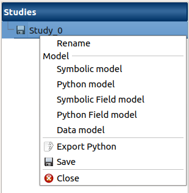
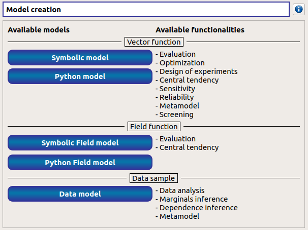
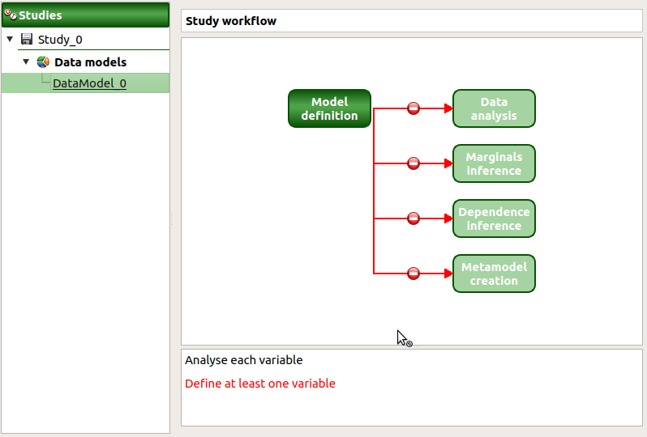
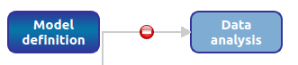
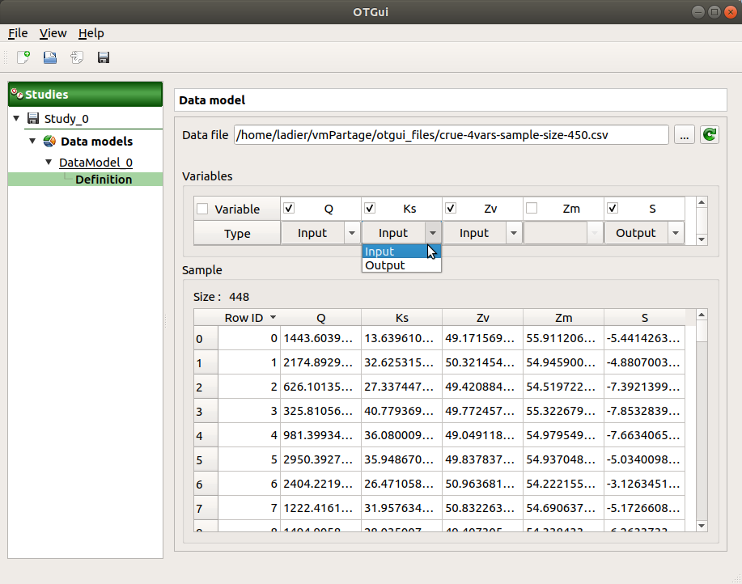
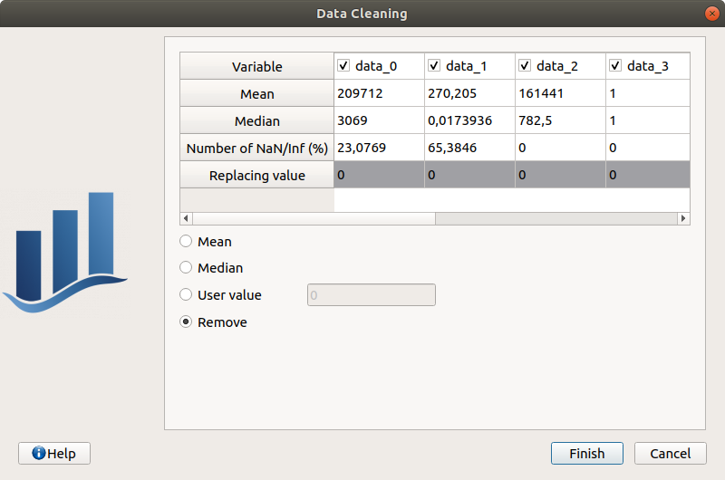

User manual - Define a data model¶
The interface allows the user to load data samples and analyze them. They are considered as data models.
1- Creation¶
- A data model can be created through:
the context menu of the study item
the Data model button of the study window

The creation of a data model adds a new element in the study tree, below the Data models section.
- Different actions are available through the context menu of the model (by right click):
Rename: Rename the model
Define the model: Open a new window to define the model
Remove: Remove the model and all the analyses depending on it
The item is associated with a Study workflow window.
This diagram displays the possible actions an user can perform in real time. An action is active when its box is in dark green and when a previous one is valid. A box is disabled when its box is in light green, and the previous one is not valid. When the mouse pointer is hovered over a box, an information message appears at the bottom of the window in order to specify what sort of actions the box proposes. If the box is disabled the message indicates why the previous one is not valid.
On the screenshot above, the mouse points over the Data analysis box: here the action is Analyse each variable (below the main window), but this action is available only if the user has defined at least one variable in the data model. So, here the only option of the user is to complete the model.
2- Definition¶
- A new data model can be defined through:
the context menu of the data model item
the Model definition box of the model diagram

When the definition is required the following window appears:
When clicking on the … button, a dialog box offers to select a file (.txt or .csv): validate the dialog box, load the file and its content is displayed in the Sample part of the window.
The Variables part shows the variables of the model in columns.
In Variable row, variable names can be edited (select the cell and left-double click); If no column names is specified in the file header, default names are used (data_0, data_1, …).
The Type row defines the type of each variable: by default, all variables are input except the last one, considered as an output variable. The user can enable/disable one or several variables, by checking off the corresponding column of the table. By default, all the columns are checked off. The model must contain at least one variable to validate the model.
The table containing sample data can be edited using the right click popup menu:

New lines can be added using Add row then can be edited.
Lines can also be removed by selecting them and choosing Remove row(s).
Data cleaning wizard can also be launched. It will look for invalid values in the sample (NaNs/Infs) and will let the choice to the user to remove/replace them. Undefined values can be replaced by variable statistical moments (mean/mdeian) or user-defined values. Each sample variable can be processed independently by toggling the corresponding checkbox in the variable column header.